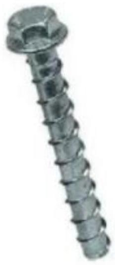

TOPIC 4: JOINING OF METALS
Joining of Metals Introduction
Joining can be defined as one of the manufacturing processes by which two or more solid components can be assembled together with or without the application of external elements such as filler, strap, heat, pressure, etc. There exist various joining techniques in order to assemble a larger variety of materials in innumerable ways. Some of these methods can join components permanently, while others can join temporarily. Accordingly, joining can be classified into two groups - temporary and permanent.
4.1: Mechanical joining of metals.
4.1.1 Temporary removable joints
A temporary joint allows disassembly of assembled structures without rupturing the components. Easy disassembly makes inspection and maintenance very easy. However, strength of the temporary joints may not be as high as in a permanent joint.
Fasteners are the fast and foremost example for temporary joints. It includes, but not limited to, threaded elements like nut, bolt, screw, etc., clips, buttons, clamps, cables, nails, hooks, rings, bands, staples, etc. Apart from fasteners, joining by press fit, cotter joint, knuckle joint, etc. are also temporary joining elements. On the other hand, welding is one overwhelmingly accepted permanent joining process. Except this, rivet joint, coupling, soldering, brazing, etc. are considered as permanent joining processes. Most adhesive bonding also affix parts permanently.
4.1.2 Screws
A screw is a broad category of mechanical fastener with a threaded shaft, designed to screw into a part. This includes wood screws and self-topping screws, which have a tapered shaft with sharp threads designed to cut a mating thread in the part to which they are fastened. It also includes machine screws, which much more closely resemble bolts, but their entire shaft is normally threaded.
A screw will usually have a head on one end that allows it to be turned with a tool. Common tools for driving screws include screwdrivers and wrenches.
The head is usually larger than the body of the screw, which keeps the screw from being driven deeper than the length of the screw and to provide a bearing surface. There are exceptions. A carriage bolt has a domed head that is not designed to be driven.
Most screws and bolts are tightened by clockwise rotation, which is called a right-hand thread. Screws with a left-hand thread are used in exceptional cases, such as where screw will be subject to counterclockwise torque, which would tend to loosen a right-hand screw. For this reason, the left-side pedal of a bicycle has a left-hand thread.
Types of screws
1 Carriage Bolts
Carriage bolts are forms of bolts used to fasten metal to metal or wood to metal. It is different from other bolts by its shallow mushroom head and the shank being rounded along its entire length.
The carriage bolt is designed with a domed head, which can prevent loosening from one side. The increased head size of the screw also prevents the bolt from being pulled through the wooden construction. Using a domed head nut prevents the carriage bolt from unlocking from the unprotected side.
#2 Decking Screws
Deck screws are special screws used to hold decks (flat roofless structures) together primarily for outdoor applications. Decking screws are made of stainless steel or carbon steel and are specifically designed for joining wood or composite boards together.
They are made in such a way that they are capable of resisting coating like rust and corrosion due to which they can withstand damp environmental conditions. They are available in covered threads with sharp edges and narrow points.
#3 Double Ended Screws
Double-ended screws are threaded fasteners used to form a joint that is usually under the object. These are used to two pieces of wood or two parts that are able to move together. They have two pointed ends that can be inserted into two surfaces, which will form a hidden joint.
They are headless screws with rotating threads at both ends which can be woodless screws with machine screws on both ends or a combination of wood screws. Double-ended screws are easily attached or detachable from the user, so they are easy to use.
#4 Drywall Screws
Drywall screws are typically used to attach drywall panels with softwoods or metal studs. These are unique forms of self-tapping screws with a cylindrical shaft. These screws have deeper threads than regular screws with a relatively higher pitch and length, which prevents them from loosening from the drywall.
They have a rough thread and flat tip that makes them easy to drill under the surface of drywall but requires a power screwdriver. Drywall screws provide a firmer grip but do not have the same corrosionresistant properties as deck screws. They do not require pre-drilling the holes as they have their own drilling tip.
#5 Eye Bolt Screws
An eye bolt is a bolt that has an eye-shaped loop at one end and threads around the shank of the screw at the other end. The eye bolt screws are used to attach a secure eye to a structure or system, so it becomes easy to tie ropes or cables.
These are very easy to carry in metal and provide stability plus strength so that an object can be easily pulled out or lifted with the help of rope. Eyebolt screws are normally used as a connection point for anchoring, pulling, pushing, or hoisting applications.
#6 Framing Screws
Framing screws are types of screws used for sheet metal, wood, composite decking, and cement fiberboard applications. These special types of screed are designed to fit into varieties of materials from hardwood floors to brittle materials.
The function of framing screws is similar to circular saw blades because they prevent sawdust from reaching the edge of the screw hole. Framing screws are commonly seen in outdoor applications such as kitchen cabinet installation and deck building.
#7 Fillister Head Screws
Fillister head screws are slotted head machine fasteners. These pan heads are similar to machine screws but are made of larger heads that can be useful for attaching metal or wood to metal. Often most of the time, these are also referred to as cheese head screws.
The heads of these screws are primarily chosen for counterbore holes. These sizable deep heads make them suitable for reciprocating and slot drives. But more generally, cheese head screws are a great selection for use in tool manufacturing and automotive applications.
#8 Hex Cap Screws
Hex cap screws are six-sided bolts (hexagon) made with a perforated hex head and a washer face on the bearing surface. These types of screws are used to attach wood or metal to wood. These screws have tight tolerances on body dimensions and have a chamfer.
Hex screws have short steel threads making them ideal for interior home improvement projects. These screws also include a flat washer under the screw head and provide precise application. The major use of hex bolts is in docks, bridges, road structures, and buildings.
#9 Hammer Drive Screws
These screws fall under the category of self-tapping screws. These screws are typically manufactured with rounded heads that have no slots. Hammer drive screws are used for attaching nameplates or wall signs, as well as are used to seal drain holes.
In addition, they are also highly useful for corrosion-resistant tubular structures. Screws have a similar function to nails as they are driven into the holes using a hammer or mallet for fast assembly purposes. Before installing them, it requires a small pre-drilled hole to complete the task successfully.
#10 Lag Screws
Lag screws are used in heavy work and are often used in construction to fasten pieces of wood together. They are rigid screws that come in hex or square with thick threads and are able to hold up to heavy workpieces.
The lag bolt provides a long-lasting connection due to its long length. This is why they are used for materials that may be subjected to heavy force or can bear heavy loads. It is usually much heavier screws than traditional wood screws. These screws differ from ordinary wood or sheet metal screws.
#11 Machine Screws
A machine screw fastening parts that have a socket in their head that allows it to be turned using a screwdriver. They are commonly employed to hold parts of machines in industries such as electronics, engineering, and manufacturing equipment.
These screws are specifically used to fasten a tapped hole to the surface using a nut. The screws are stretched when tightened, and tensile loads secure the parts together. Normally, Their pointed ends are used to connect metal parts together. Nowadays, they are seen in almost every material including nylon, brass, stainless steel, and carbon steel.
#12 Masonry Screws
Masonry screws are heavy-duty screws used to hold strong materials such as concrete, CMU, mortar joints, and brick in place. They are made of stainless or carbon steel and come with or without a rust coating.
Fitting a masonry screw requires a pre-drilled small hole using a carbide bit or hammer drill before being inserted. Masonry screws are available in two types: a flat head for countersinking, or a hex washer head to sit on the top of the surface of the material.
#13 Oval Head Screws
These screws are known in the shape of undercut or trim heads with shorter screw lengths that usually give a longer thread grip. Oval-head screws are somewhat countersunk, with the screw head about halfway above the surface.
The oval countersunk screw heads have a rounded finish top and are mostly used to cover switches. They are also considered a good option to make the finished product more attractive. These types of screws are generally available in two types, rounded head screws, and Phillips oval head screws.
#14 Pan Head Screws
Pan head screws are a common head type of non-countersunk screw head used in woods. These are also self-tapping, self-drilling, and machine screws. They have wide heads, a flat bearing surface, a flat head with rounded sides that sit on top of the material it fastens to.
With its larger diameter and higher edges, the drive slot is deeper, allowing for increased torque while reducing the risk of screw damage. Pan-head screws with single cuts in slotted heads are a type of pan head screws that works with any screwdriver. The main purpose of using these screws is to secure metal components like machinery and automotive engine parts.
#15 Particle Board Screws
Particle board screws are full-length threaded screws. The advantage of these screws is that the longer thread yields greater engagement and higher pulling force. This type of screw is designed for composite wood such as laminated particle board or craftwood. And is used by cabinet makers in domestic and commercial joinery.
Particle board screws are similar to drywall screws but are available in shorter lengths than standard drywall screws. Due to their lightweight, they can be easily carried and handled. These screws are used by cabinet makers in domestic and commercial joinery.
#16 Square Head Bolts
Square head bolts are like hex cap screws but have a four edge square head instead of a six edge hexagonal head. They are also known as both bolts and screws and are designed to work with a wrench. These screws are threaded partially along a shoulder under the head.
The function and purpose of a square head screw determine the size of the head of the bolt. This type of screw is used to tighten the nut as well as two parts. Square head screws were the industry standard before hex bolts gained importance.
#17 Self-drilling Screw
Self-drilling screws come with a highly sharp pointed end that almost work as a drill bit and cutting threads useful tap holes during installation. Because they have a tip like a drill bit, they don't require pilot holes. Self-drilling screws are typically used screws for quick drilling in both metal and wood.
These are usually be determined by their point and flute tip. They can drill and tap their own holes in harder materials saves you using the tool. These screws are easy to find because of their point, which curves at the end and is look like a twist drill.
#18 Set Screws
A set screw is a screw used to secure an object within or against another object such as fixing a pulley or gear on a shaft by applying pressure and/or friction. A set screw is typically used without a nut that is screwed into a threaded hole drilled in two objects to secure it.
Once the screw fits into the first object, the projected end of the set screw presses firmly against the second object, working similarly to a clamp. These are often headless and are threaded along their entire length so that it sits completely inside the hole.
#19 Shoulder Screws
This type of screw fits into one part and provides a freely rotating pin joint connection in the other. It consists of a large diameter shank just below the head which is a smaller diameter for the threaded length.
This design allows a shoulder screw to be fitted firmly to one part without locking the other part, giving it axial clearance. These screws provide versatility by acting as a shaft for rotating items such as shoulder bearings.
#20 Sheet Metal Screws
Sheet metal screws can bind or join two pieces of sheet metal to other types of metal, such as tubing. Sheet metal screws can secure and tighten metal objects to each other or fasten objects. These screw sizes are available which include flat, hex, and round.
Sheet metal screws have pointed ends and include a fine thread along the shank. These screws work by drilling into the sheet metal with the fully threaded shank. The advantage of using these screws is that they can provide excellent penetration, corrosion-resistant, and superior holding.
#21 Socket Head Screws
A socket cap screw is a type of machine screw that has a cylindrical barrel-shaped head with a hexagonal socket. Due to their cylindrical heads and internal wrenching features, they allow for use in locations where externally dampening fasteners are not desirable.
These screws are perfect when needing a fastener to sit under the surface of the material. Wherever a joint is required, they can deliver extremely strong and reliable plus they are also resistant to corrosion. Apart from these, they give an attractive and quality finish.
#22 Thread Cutting Screws
These types of screws have sharp edges because the depth of the hole is slightly longer than that of the screw. This arrangement will keep the metals from getting locked inside the device. Thread cutting screws are often used with wood and metal.
The purpose of using these is to reduce the build-up of internal tool stresses, thus making them ideal for extremely hard materials. Unlike a thread-forming screw, it does not have a cutting edge, which is difficult in materials with low compressive strength.
#23 Washer Faced Screws
These types of screws act as springs to decrease the distance between the nut and the head of the screw. The washer-faced type screws are available in many types and sizes.
Basically, some types have teeth that penetrate the surface and lock the screw head into the workpiece. In this type, the washer face is located just below the head, providing a smooth bearing surface for easy tightening.
#24 Wood Screws
As the name suggests, this type of screw is used to attach a wooden workpiece. A wood screw is commonly made of brass, steel, and bronze materials. Wood screws have different threads and are available in a variety of heads.
As we move towards the top of the screw, it thins a bit, the diameter of the screw being thicker than the tip. These are available in both the options which are partially or fully covered threads at the shank. The head size of this screw depends on different applications.
#25 Weld Screws
These are needed to be welded to a metal surface with a shaft to hold the item in place with a nut and washer. The screw is first welded to the plate by melting a specially created point on the screw and then on the plate by means of a powerful electrical impulse.
The welded screw protrudes from the head to allow welding without any holes. The welding stud is then attached to a piece of metal that is positioned on the metal base. They are used in the automotive, industrial, marine, construction, and aerospace industries.
#26 Tamper-proof Screws
Tamper-proof screws are made difficult or impossible to remove when installed. These are suitable for use in buildings or areas that are accessible by the public as a means of controlling or preventing destruction.
These are the types of safety screws that can be determined by their unconventional drive resulting in more difficulty to tamper or take apart. These screws are primarily used in prisons to secure materials such as car license plates, gutters, and grill bars.
4.1.3 Bolt and nuts
A nut is a small metallic piece of metal with a spiral cut groove that runs around a hole in its center while a bolt is a metallic piece with a round stem as its body and threaded into one end. Bolts have different length sizes while nuts have a standard size.